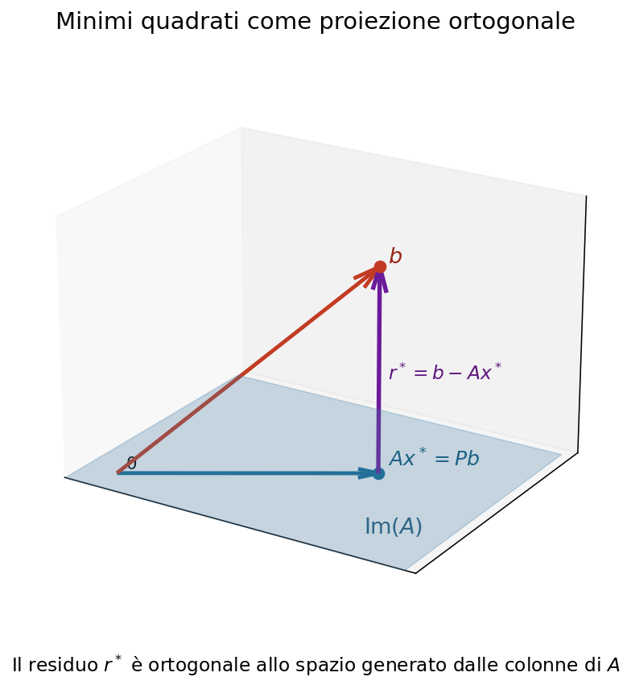
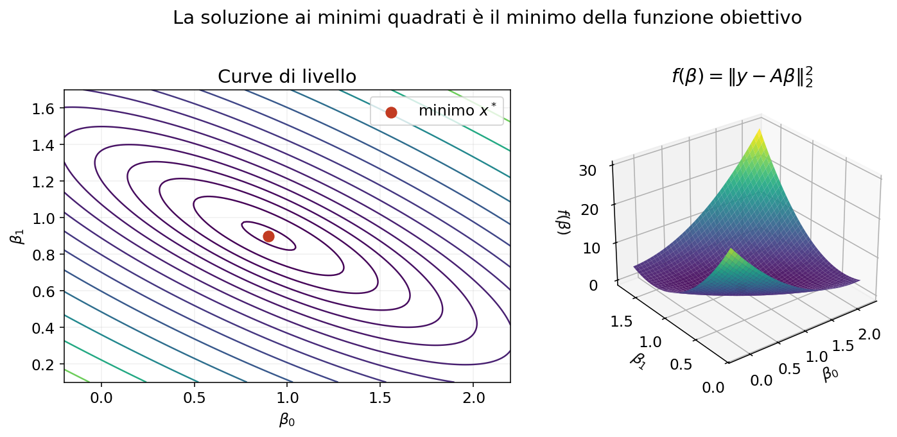
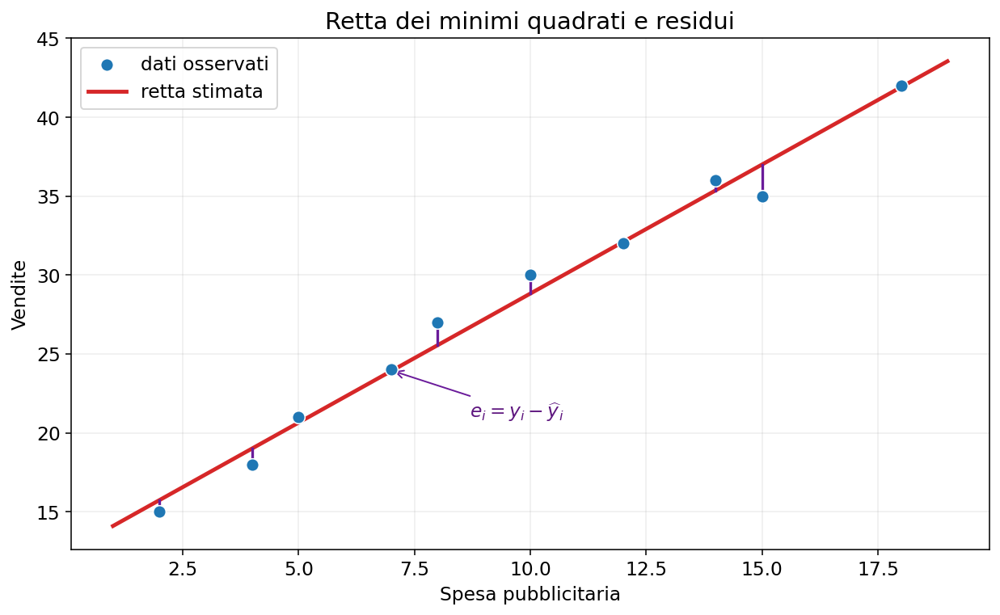
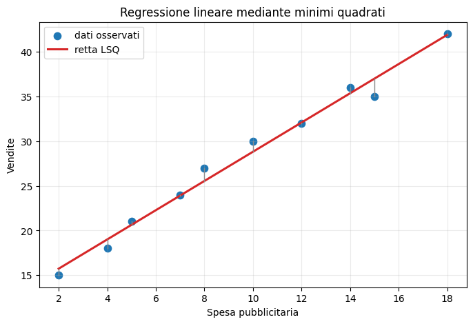

Il problema lineare dei minimi quadrati#
I minimi quadrati permettono di trovare una soluzione approssimata quando un sistema lineare non ammette una soluzione esatta. Sono inoltre alla base della regressione lineare e di numerosi metodi di analisi dei dati.
In questo notebook introdurremo gradualmente il problema, la sua interpretazione geometrica e i principali metodi numerici per risolverlo.
Due problemi predittivi fondamentali#
Nell’apprendimento supervisionato distinguiamo soprattutto:
classificazione, se \(y\) è una categoria;
regressione, se \(y\) è una quantità numerica.


In entrambi i casi il modello deve individuare una relazione tra gli input e gli output osservati, per poi applicarla a nuovi dati. Cambiano il tipo di risposta e le misure utilizzate per valutare l’errore.
Obiettivi#
Alla fine del notebook sapremo:
riconoscere un problema lineare ai minimi quadrati;
interpretare residuo e soluzione geometricamente;
derivare le equazioni normali;
risolvere il problema mediante equazioni normali e SVD;
comprendere esistenza, unicità e soluzione di norma minima;
usare correttamente
numpy.linalg.lstsq;collegare i minimi quadrati alla regressione lineare.
1. Da dove nasce il problema?#
Consideriamo un sistema lineare
Se \(m>n\), ci sono più equazioni che incognite e il sistema si dice sovradeterminato. In presenza di dati reali, rumore o errori di misura, in generale non esiste un vettore \(x\) che soddisfi esattamente tutte le equazioni.
Non vogliamo quindi risolvere esattamente \(Ax=b\), ma trovare il vettore \(x\) per cui \(Ax\) è il più vicino possibile a \(b\).
Residuo e funzione obiettivo#
Per ogni possibile vettore \(x\) definiamo il residuo
Il residuo misura la parte di \(b\) che il modello \(Ax\) non riesce a spiegare. Il problema lineare dei minimi quadrati è
Poiché
stiamo minimizzando la somma dei quadrati degli errori.
Perché si usano i quadrati?#
L’uso dei quadrati ha alcune proprietà convenienti:
gli errori positivi e negativi non si cancellano;
gli errori grandi vengono penalizzati maggiormente;
la funzione obiettivo è continua e derivabile;
nel caso lineare il problema conduce a strumenti di algebra lineare efficienti.
Lo svantaggio è che un valore anomalo può avere un’influenza molto forte proprio perché il suo errore viene elevato al quadrato.
import numpy as np
import matplotlib.pyplot as plt
# Quattro equazioni e due incognite
A = np.array([[1., 0.],
[1., 1.],
[1., 2.],
[1., 3.]])
b = np.array([1., 2., 2., 4.])
x_star, residui, rango, valori_singolari = np.linalg.lstsq(A, b, rcond=None)
b_stimato = A @ x_star
r = b-b_stimato
print('Soluzione LSQ:', np.round(x_star, 4))
print('Ax*:', np.round(b_stimato, 4))
print('b: ', b)
print('Residuo b-Ax*:', np.round(r, 4))
print('Somma dei quadrati:', np.dot(r, r))
Soluzione LSQ: [0.9 0.9]
Ax*: [0.9 1.8 2.7 3.6]
b: [1. 2. 2. 4.]
Residuo b-Ax*: [ 0.1 0.2 -0.7 0.4]
Somma dei quadrati: 0.6999999999999996
2. Interpretazione geometrica#
Il vettore \(Ax\) è una combinazione lineare delle colonne di \(A\). Perciò, al variare di \(x\), il vettore \(Ax\) appartiene sempre allo spazio generato dalle colonne di \(A\), indicato con
Se \(b\) non appartiene a questo sottospazio, l’equazione \(Ax=b\) non ha soluzione. La soluzione ai minimi quadrati sceglie \(Ax^*\) come il punto di \(\operatorname{Im}(A)\) più vicino a \(b\).
Quindi \(Ax^*\) è la proiezione ortogonale di \(b\) sullo spazio delle colonne di \(A\).


Ortogonalità del residuo#
Nel punto più vicino, il residuo
è ortogonale a tutte le colonne di \(A\). Pertanto
Sostituendo \(r^*=b-Ax^*\) si ottiene
print('A^T r =', np.round(A.T @ r, 12))
print('||A^T r||_2 =', np.linalg.norm(A.T @ r))
# La matrice di proiezione sullo spazio delle colonne di A
P = A @ np.linalg.solve(A.T @ A, A.T)
print('||Pb-Ax*||_2 =', np.linalg.norm(P @ b-b_stimato))
print('||P^2-P||_2 =', np.linalg.norm(P @ P-P))
A^T r = [0. 0.]
||A^T r||_2 = 3.820199830714189e-15
||Pb-Ax*||_2 = 1.4217791915866692e-15
||P^2-P||_2 = 2.785946459622037e-16
Esistenza e unicità#
Il problema lineare ai minimi quadrati ammette sempre almeno una soluzione. L’unicità dipende dal rango di \(A\):
se \(\operatorname{rank}(A)=n\), le colonne sono linearmente indipendenti e la soluzione è unica;
se \(\operatorname{rank}(A)<n\), esistono infinite soluzioni che producono lo stesso vettore \(Ax^*\) e lo stesso residuo minimo.
Nel secondo caso è possibile scegliere, tra tutte le soluzioni, quella con norma euclidea minima.
3. Equazioni normali#
La stessa condizione può essere ottenuta minimizzando la funzione
Sviluppando il prodotto scalare:
Il gradiente è
La matrice Hessiana è \(\nabla^2f(x)=2A^TA\) ed è semidefinita positiva. La funzione è quindi convessa: ogni punto che annulla il gradiente è un minimo globale. Se \(A\) ha rango massimo per colonne, l’Hessiana è definita positiva e il minimo è unico.
Imponendo \(\nabla f(x)=0\) otteniamo il sistema delle equazioni normali:
La figura seguente mostra la funzione obiettivo per il primo esempio. Le curve di livello sono ellissi concentriche e il loro centro coincide con la soluzione \(x^*\).
{kind=link}


Proprietà di \(A^TA\)#
La matrice \(A^TA\) è sempre simmetrica e semidefinita positiva, perché
Se \(A\) ha rango massimo per colonne, allora \(A^TA\) è definita positiva e invertibile. Le equazioni normali hanno quindi un’unica soluzione.
Poiché \(A^TA\) è simmetrica definita positiva, il sistema può essere risolto con la fattorizzazione di Cholesky
risolvendo prima \(Ly=A^Tb\) e poi \(L^Tx=y\).
# Soluzione mediante equazioni normali e Cholesky
G = A.T @ A
c = A.T @ b
L = np.linalg.cholesky(G)
y = np.linalg.solve(L, c)
x_normali = np.linalg.solve(L.T, y)
print('A^T A =\n', G)
print('Soluzione:', np.round(x_normali, 6))
print('Confronto con lstsq:', np.linalg.norm(x_normali-x_star))
A^T A =
[[ 4. 6.]
[ 6. 14.]]
Soluzione: [0.9 0.9]
Confronto con lstsq: 1.4812222630807097e-15
Non calcolare l’inversa#
Anche se formalmente
in un programma non bisogna calcolare esplicitamente l’inversa. È più efficiente e più accurato risolvere il sistema lineare con solve, Cholesky oppure SVD.
Regola pratica: usare
solve(M,c)al posto diinv(M) @ c.
Il problema numerico delle equazioni normali#
In norma 2 vale
Se \(A\) ha rango massimo per colonne, il numero di condizionamento spettrale è
Un valore grande indica che alcune colonne sono quasi linearmente dipendenti e che la soluzione può essere molto sensibile a piccole perturbazioni. Formare \(A^TA\) può quindi peggiorare molto il condizionamento. Se \(A\) è già sensibile alle perturbazioni, le equazioni normali possono perdere parecchia accuratezza.
Per problemi ben condizionati e di dimensione moderata possono essere adeguate; per problemi delicati è preferibile la SVD.
# Esempio mal condizionato: matrice di Vandermonde
t = np.linspace(0, 1, 40)
grado = 12
A_mal = np.vander(t, grado+1, increasing=True)
coefficienti_veri = np.array([(-1)**j/(j+1) for j in range(grado+1)])
b_mal = A_mal @ coefficienti_veri
x_ne = np.linalg.solve(A_mal.T @ A_mal, A_mal.T @ b_mal)
x_svd = np.linalg.lstsq(A_mal, b_mal, rcond=None)[0]
err_ne = np.linalg.norm(x_ne-coefficienti_veri) / np.linalg.norm(coefficienti_veri)
err_svd = np.linalg.norm(x_svd-coefficienti_veri) / np.linalg.norm(coefficienti_veri)
print(f'cond(A) = {np.linalg.cond(A_mal):.3e}')
print(f'cond(A^T A) = {np.linalg.cond(A_mal.T @ A_mal):.3e}')
print(f'Errore equazioni normali = {err_ne:.3e}')
print(f'Errore metodo SVD = {err_svd:.3e}')
cond(A) = 6.924e+08
cond(A^T A) = 6.900e+18
Errore equazioni normali = 2.866e+00
Errore metodo SVD = 1.876e-08
4. Soluzione mediante SVD#
Sia
la decomposizione ai valori singolari e sia \(r=\operatorname{rank}(A)\). La soluzione ai minimi quadrati di norma minima è
La formula mostra che le componenti di \(b\) lungo \(u_i\) vengono divise per il corrispondente valore singolare. Valori singolari molto piccoli possono quindi amplificare rumore ed errori numerici.
Pseudoinversa#
Se
è la SVD compatta, si definisce la pseudoinversa di Moore-Penrose
La soluzione di norma minima si scrive quindi
I valori singolari nulli non vengono invertiti. In aritmetica finita si usa una tolleranza per decidere quali valori considerare numericamente nulli.
U, s, VT = np.linalg.svd(A, full_matrices=False)
tol = max(A.shape) * np.finfo(float).eps * s[0]
s_inv = np.array([1/sigma if sigma > tol else 0.0 for sigma in s])
A_piu = VT.T @ np.diag(s_inv) @ U.T
x_svd = A_piu @ b
print('Valori singolari:', np.round(s, 6))
print('Soluzione SVD:', np.round(x_svd, 6))
print('||x_SVD-x_lstsq||_2 =', np.linalg.norm(x_svd-x_star))
Valori singolari: [4.10003 1.090757]
Soluzione SVD: [0.9 0.9]
||x_SVD-x_lstsq||_2 = 2.482534153247273e-16
Caso di rango non massimo#
Se le colonne di \(A\) sono linearmente dipendenti, esistono vettori non nulli \(z\in\ker(A)\). Se \(x^*\) è una soluzione ai minimi quadrati, allora
Di conseguenza \(x^*+z\) produce lo stesso residuo per ogni \(z\in\ker(A)\): la soluzione non è unica. La pseudoinversa seleziona la soluzione ortogonale al nucleo, che è anche quella di norma minima.
A_rd = np.array([[1., 1., 2.],
[2., 2., 4.],
[3., 3., 6.],
[4., 4., 8.]])
b_rd = np.array([1., 2., 2., 4.])
x_min, _, rango_rd, _ = np.linalg.lstsq(A_rd, b_rd, rcond=None)
z = np.array([1., -1., 0.]) # appartiene al nucleo di A_rd
x_altra = x_min + 3*z
print('Rango:', rango_rd)
print('||A z||_2 =', np.linalg.norm(A_rd @ z))
print('Residuo della soluzione minima:', np.linalg.norm(b_rd-A_rd @ x_min))
print('Residuo di un altra soluzione: ', np.linalg.norm(b_rd-A_rd @ x_altra))
print('Norma soluzione minima:', np.linalg.norm(x_min))
print('Norma altra soluzione: ', np.linalg.norm(x_altra))
Rango: 1
||A z||_2 = 0.0
Residuo della soluzione minima: 0.8366600265340756
Residuo di un altra soluzione: 0.836660026534075
Norma soluzione minima: 0.36742346141747667
Norma altra soluzione: 4.258520869973517
5. Confronto tra i metodi#
Metodo |
Vantaggi |
Limiti |
|---|---|---|
Equazioni normali + Cholesky |
Semplice e rapido |
Forma \(A^TA\) e ne eleva al quadrato il condizionamento |
SVD |
Molto robusta; identifica rango e soluzione di norma minima |
Più costosa |
Per un uso generale è preferibile chiamare una routine specializzata che scelga algoritmi numericamente affidabili. In NumPy si usa np.linalg.lstsq.
La funzione numpy.linalg.lstsq#
L’istruzione
x, residuals, rank, s = np.linalg.lstsq(A, b, rcond=None)
restituisce:
x: la soluzione di norma minima;residuals: la somma dei quadrati dei residui, quando è definita in questa forma;rank: il rango numerico stimato di \(A\);s: i valori singolari di \(A\).
Il parametro rcond determina la soglia sotto la quale un valore singolare viene trattato come nullo.
x, residuals, rank, s = np.linalg.lstsq(A, b, rcond=None)
print('x =', x)
print('residuals =', residuals)
print('rank =', rank)
print('singular values =', s)
print('Verifica diretta SSE =', np.sum((b-A @ x)**2))
x = [0.9 0.9]
residuals = [0.7]
rank = 2
singular values = [4.10003045 1.09075677]
Verifica diretta SSE = 0.6999999999999996
6. Dai minimi quadrati alla regressione lineare#
Supponiamo di osservare coppie \((t_i,y_i)\) e di voler descrivere la relazione con una retta
Per tutte le osservazioni il modello diventa
La prima colonna di uno permette di rappresentare l’intercetta \(\beta_0\). Stimare la retta significa risolvere un problema lineare ai minimi quadrati.
Esempio: spesa pubblicitaria e vendite#
Consideriamo un piccolo dataset in cui \(t\) rappresenta la spesa pubblicitaria e \(y\) le vendite. Cerchiamo la retta che descrive meglio la relazione media tra le due variabili.
I segmenti verticali nel grafico rappresenteranno i residui \(y_i-\widehat y_i\).
{kind=link}


pubblicita = np.array([2, 4, 5, 7, 8, 10, 12, 14, 15, 18.])
vendite = np.array([15, 18, 21, 24, 27, 30, 32, 36, 35, 42.])
A_reg = np.column_stack((np.ones(len(pubblicita)), pubblicita))
beta, _, _, _ = np.linalg.lstsq(A_reg, vendite, rcond=None)
vendite_stimate = A_reg @ beta
griglia = np.linspace(pubblicita.min(), pubblicita.max(), 200)
retta = beta[0] + beta[1]*griglia
plt.figure(figsize=(8, 5))
plt.scatter(pubblicita, vendite, s=55, label='dati osservati')
plt.plot(griglia, retta, color='tab:red', lw=2.2, label='retta LSQ')
for x_i, y_i, yh_i in zip(pubblicita, vendite, vendite_stimate):
plt.plot([x_i, x_i], [yh_i, y_i], color='0.55', lw=1)
plt.xlabel('Spesa pubblicitaria')
plt.ylabel('Vendite')
plt.title('Regressione lineare mediante minimi quadrati')
plt.legend()
plt.grid(alpha=0.25)
plt.show()
print(f'Intercetta beta_0 = {beta[0]:.3f}')
print(f'Pendenza beta_1 = {beta[1]:.3f}')

Intercetta beta_0 = 12.458
Pendenza beta_1 = 1.636
Interpretazione dei coefficienti#
Nel modello
l’intercetta \(\beta_0\) è il valore previsto quando \(t=0\), mentre la pendenza \(\beta_1\) è la variazione media prevista di \(y\) associata a un aumento unitario di \(t\).
Questa interpretazione deve essere fatta nel dominio osservato: estrapolare molto oltre i valori presenti nei dati può essere inaffidabile. Inoltre una relazione statistica non implica automaticamente un rapporto causale.
Misure dell’errore#
Indicando con \(e_i=y_i-\widehat y_i\) i residui, sono comuni le seguenti quantità:
L’RMSE ha la stessa unità di misura della variabile risposta. \(R^2\) misura la frazione di variabilità spiegata rispetto al semplice uso della media, ma non dimostra che il modello sia corretto.
errori = vendite-vendite_stimate
SSE = np.sum(errori**2)
MSE = np.mean(errori**2)
RMSE = np.sqrt(MSE)
R2 = 1-SSE/np.sum((vendite-vendite.mean())**2)
print(f'SSE = {SSE:.4f}')
print(f'MSE = {MSE:.4f}')
print(f'RMSE = {RMSE:.4f}')
print(f'R^2 = {R2:.4f}')
SSE = 9.6033
MSE = 0.9603
RMSE = 0.9800
R^2 = 0.9855
Regressione lineare con più variabili#
Con più caratteristiche il modello diventa, per esempio,
Ogni osservazione produce una riga della matrice del modello o design matrix. Il problema resta lineare nei coefficienti \(\beta_j\), anche quando le variabili di partenza sono numerose.
Se due colonne sono quasi combinazioni lineari l’una dell’altra, i coefficienti possono diventare molto sensibili: è il fenomeno della multicollinearità.
Modelli polinomiali#
Anche un modello come
è un problema lineare ai minimi quadrati, perché è lineare rispetto ai parametri \(\beta_0,\beta_1,\beta_2\). Basta costruire la matrice
Un grado elevato può però produrre mal condizionamento e adattamento eccessivo ai dati.
7. Aspetti pratici nell’analisi dei dati#
Intercetta#
Per includere un termine costante bisogna aggiungere ad \(A\) una colonna di uno. Ometterla forza il modello a passare per l’origine.
Scala delle variabili#
Cambiare unità di misura non modifica le previsioni di un modello LSQ non regolarizzato, ma può peggiorare il condizionamento e rendere difficili i confronti tra coefficienti. Centrare e scalare le variabili può aiutare.
Valori anomali#
Poiché gli errori vengono elevati al quadrato, gli outlier possono spostare sensibilmente la soluzione. È importante ispezionare dati e residui.
Minimi quadrati pesati#
Se alcune osservazioni sono più affidabili di altre, possiamo assegnare pesi \(w_i>0\) e risolvere
In forma matriciale, con \(W=\operatorname{diag}(w_1,\ldots,w_m)\),
Si tratta ancora di un problema lineare ai minimi quadrati, applicato alla matrice \(W^{1/2}A\) e al vettore \(W^{1/2}b\).
Regolarizzazione di Tikhonov o Ridge#
Quando il problema è mal condizionato o ha molte variabili, si può penalizzare la grandezza della soluzione:
Le corrispondenti equazioni sono
Il parametro \(\lambda\) controlla il compromesso tra aderenza ai dati e stabilità: aumentando \(\lambda\) i coefficienti vengono ridotti, introducendo distorsione ma diminuendo la sensibilità al rumore.
Addestramento e valutazione predittiva#
Un errore piccolo sui dati usati per stimare i coefficienti non garantisce buone previsioni su nuovi dati. In un’applicazione predittiva bisogna:
separare i dati in training set e test set;
stimare i coefficienti usando soltanto il training set;
applicare il modello al test set;
calcolare RMSE o altre metriche sui dati non utilizzati nell’addestramento.
Questa distinzione riguarda la capacità di generalizzazione del modello, non soltanto la soluzione numerica del problema LSQ.
8. Controlli da eseguire#
Dopo aver risolto un problema ai minimi quadrati è utile controllare:
il rango numerico di \(A\);
i valori singolari e il numero di condizionamento;
la norma del residuo;
l’ortogonalità \(A^Tr\approx0\);
la distribuzione dei residui;
la presenza di valori anomali;
le prestazioni su dati non usati per stimare il modello.
Un residuo piccolo non garantisce automaticamente coefficienti accurati se il problema è mal condizionato.
9. Riepilogo#
Il problema lineare ai minimi quadrati
cerca il vettore \(Ax\) più vicino a \(b\) nello spazio generato dalle colonne di \(A\). Il residuo ottimo è ortogonale a tale spazio.
Le equazioni normali sono semplici ma possono peggiorare il condizionamento. La SVD è più robusta e permette di trattare anche matrici di rango non massimo, producendo la soluzione di norma minima.
Nell’analisi dei dati, la stessa struttura matematica permette di stimare i coefficienti della regressione lineare.